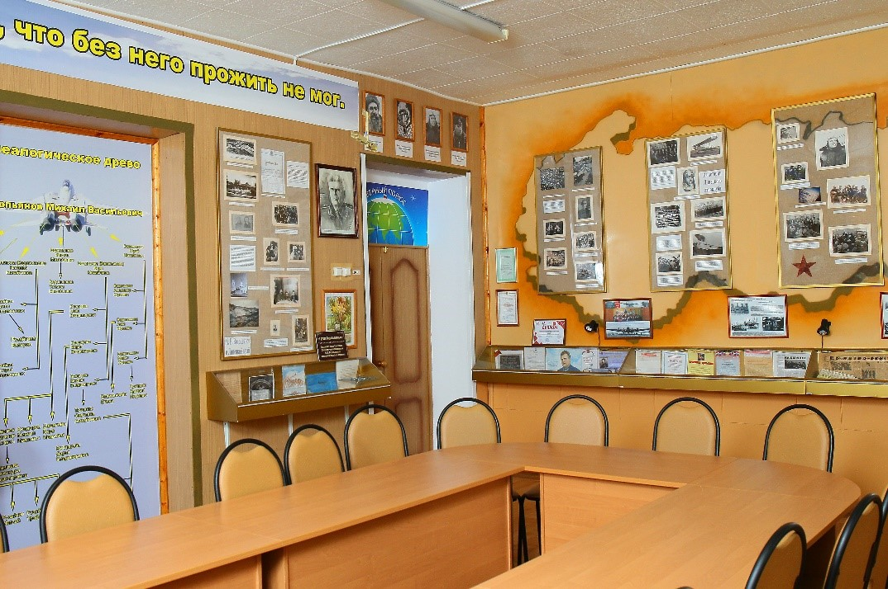
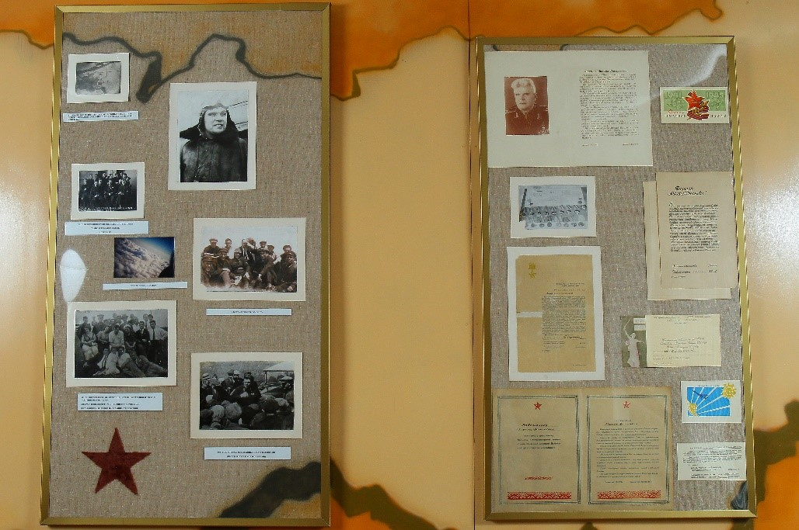
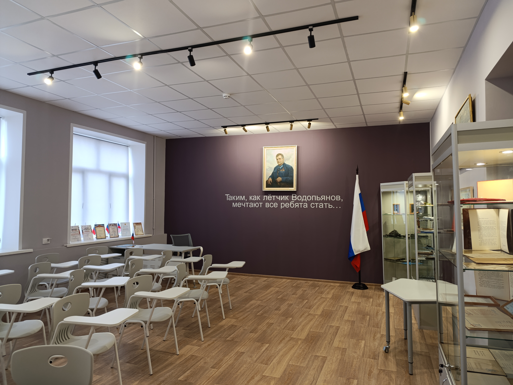

В 1981 году Совет ветеранов завода «Свободный сокол» предложил открыть музей нашему земляку, начинавшему трудовую деятельность на этом заводе, М.В.Водопьянову. 14 декабря 1982 года открытие музея состоялось. С тех пор началась работа по увековечиванию памяти такого прославленного человека, как лётчик Водопьянов. В 1999 году к 100-летию со дня рождения Героя музей был обновлен и получил «второе» рождение. Новая реконструкция была в 2009 году, к 110-летию М.В. Водопьянова, на средства муниципального гранта за школьный проект «Мы строим будущее, помня о прошлом…». В 2000 году Министерство образования РФ присвоило музею звание «Школьный музей» с вручением Свидетельства Министерства образования России за номером 7757. В 2001 году решением Липецкого городского Совета депутатов школе присвоено имя М.В.Водопьянова. Музей летчика-полярника Героя Советского Союза генерал-майора М.В.Водопьянова вошел в состав участников долгосрочной программы «Школьный музей Победы» и получил сертификат партнера Музея Победы. |
 |
|  | В пяти экспозициях музея «Водопьянов и Липецкий край», «Из истории Липецкого авиацентра», «Челюскинская и Северная эпопея», «Общественная деятельность М.Водопьянова», «История и современность» представлены более 500 экспонатов. Из них более 250 подлинные музейные предметы, свидетельствующие о жизни и деятельности славного земляка. Особую ценность представляют фотографии разных лет, его личные вещи, благодарственные письма и поздравительные телеграммы, книги, написанные писателем Водопьяновым. Музей активно сотрудничает с различными государственными и общественными организациями: Липецкий авиацентр, региональный центр подготовки граждан РФ к военной службе и военно-патриотического воспитания населения Липецкой области, военно-историческая библиотека имени Героя советского союза М. В. Водопьянова, Музей боевой Славы Поста №1 «У Вечного огня» и др. |
В ноябре 2024 года в день 125-ой годовщины со дня рождения Михаила Васильевича музей получил обновленный, современный вид. На открытии обновленного музея присутствовали почетные гости: внучка Героя Водопьянова Мария Юрьевна, правнучка – Болдырева Светлана Михайловна, представители липецкой ветви династии Водопьяновых, Герой Советского Союза Чурилов Юрий Иванович и многие другие. В школьном музее Почта России провела торжественную церемонию специального гашения почтового конверта в честь 125-летия со дня рождения Михаила Васильевича Водопьянова. Погашенная таким образом почтовая продукция приобретает филателистическую и музейную ценность. Теперь у нас появились экспонаты в цифровом виде. Один из них – партийный билет Михаила Васильевича. Музей летчика Водопьянова был представлен на различных конкурсах, где получил высокую оценку: победитель Первого Всероссийского форума школьных музеев в Музее Победы, дипломант регионального этапа Всероссийского конкурса школьных музеев РФ-2021 в номинации «Визитная карточка школьного музея», победитель регионального этапа Всероссийского конкурса школьных музеев РФ-2023 в номинации «Авторская песня о музее образовательной организации», удостоен 2 места в городском конкурсе Музейных экспозиций образовательных учреждений города Липецка в номинации «История родного края», победитель специальной номинации «Общественное признание» городского конкурса музеев образовательных организаций «Сохраняем» в рамках городской воспитательной акции «Гордимся! Мечтаем! Действуем!». |
 |